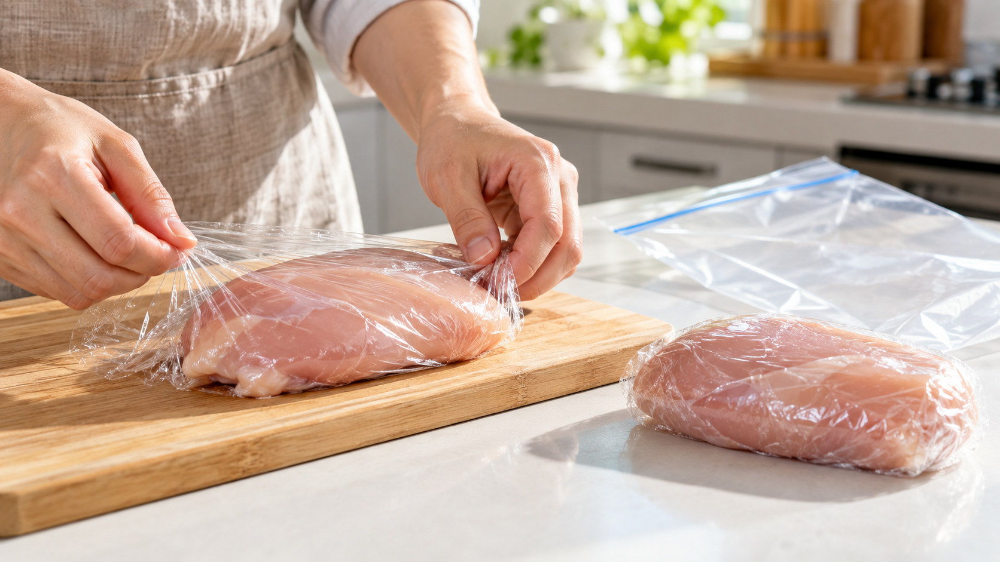

冷凍焼けは冷たさより空気で進む｜乾燥と酸化
冷凍庫から鶏肉を出したら、表面が白っぽく乾いていた。凍っているのに、なぜ水分が抜けるのだろう。
冷凍焼けを減らすには、肉の表面に包装を密着させ、袋の空気を押し出して保存する。 冷凍焼けの中心は表面の乾燥だ。低温を保つことも大切だが、食品の周りに空気が通る隙間を残さないことは、家庭ですぐ変えられる。
凍ったままでも表面は乾く
氷は、液体の水にならずに水蒸気へ変わる。この変化を「昇華」と呼ぶ。肉の表面の氷が水蒸気になり、周囲へ移ると、表面が乾いて硬くなる。食品科学の解説論文は、包装の状態に加え、保存温度、時間、空気の流れも乾燥の進み方に関わると説明している。冷凍庫の温度だけで冷凍焼けの有無は決まらない。
脂のある食品では、空気中の酸素との反応で風味が変わることもある。これは乾燥とは別の変化だ。白い部分や色の変化をすべて「酸化した」と判断することはできない。
研究と公的資料で分かったこと
冷凍した鶏ナゲットの研究では、肉の種類や包装によって脂質の酸化の進み方が異なった。加工食品での結果なので、生の鶏むね肉で同じ差が出るとは言えない。それでも、包装が冷凍中の品質に関わることを考える手がかりになる。
米国農務省は、冷凍焼けを空気が食品の表面に触れて起こる乾燥と説明している。購入時の薄い肉の包装は空気を通すため、長く保存するなら上から包むことを勧めている。包装材の案内も、食品に密着させて空気を減らし、冷凍向けの包装材を使うよう促す。
家庭での判断はシンプルだ。買ったトレーの空間をそのまま残さず、使う分ずつ包む。これは研究が家庭の鶏むね肉で最適な包み方を決めたという意味ではなく、公的資料と乾燥の仕組みから導いた保存の工夫だ。
鶏むね肉1枚を小分けして冷凍する
鶏むね肉1枚（約250g）、食品用ラップ2枚、冷凍用保存袋1枚を用意する。
- 買った日の新鮮な鶏むね肉を清潔な手と器具で扱い、2食分に切る。
- 1切れずつ食品用ラップを肉の表面に沿わせ、隙間をできるだけ減らして包む。
- 2切れを冷凍用保存袋に入れる。袋を押して空気を出し、口をしっかり閉じる。
- 袋に日付を書き、−18℃以下を保てる冷凍室へ入れる。公的な保管表の冷凍期間は品質の目安だ。家庭の保管状況で仕上がりは変わるので、日付を見て順に使う。
- 使うときは冷蔵庫で解凍し、鶏肉の中心まで十分に加熱する。米国農務省の案内は、室温に置いたままの解凍を避けるよう勧めている。
別の食材にも使える考え方
魚の切り身や豚肉を小分けして凍らせるときも、表面に包装を密着させ、袋の余分な空気を出すという判断が使える。食品の種類で品質が落ちる速さは違うから、同じ保存期間を保証するものではない。
冷凍焼けは、冷凍庫の冷たさだけで起きるわけではない。今日の冷凍保存では、まず食材と空気の隙間を減らして包むことから始めよう。
参考資料
- 米国農務省食品安全検査局「Freezing and Food Safety」
- 米国農務省食品安全検査局「What materials are safe to freeze food in?」
- Schmidt and Lee, “How Does the Freezer Burn Our Food?”, Journal of Food Science Education (2009)
- 「Lipid Oxidation in Chicken Nuggets as Affected by Meat Type, Phosphate and Packaging」
- FoodSafety.gov「Cold Food Storage Chart」